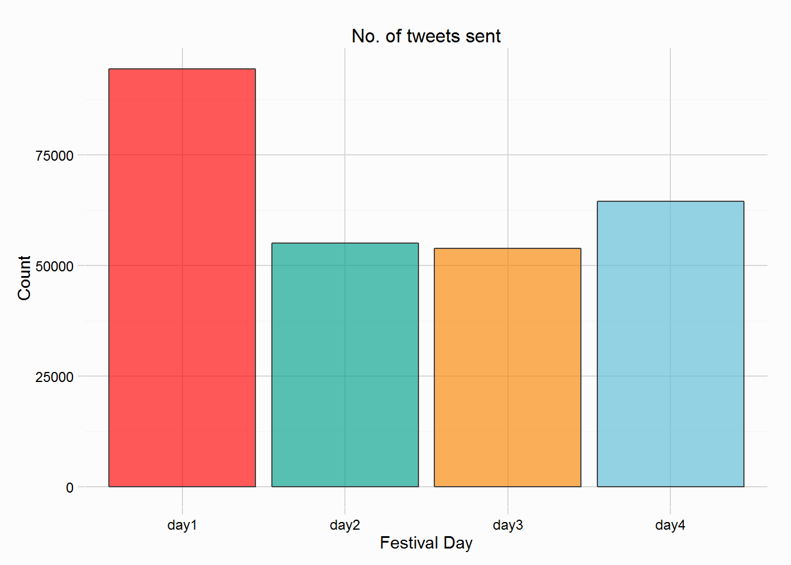
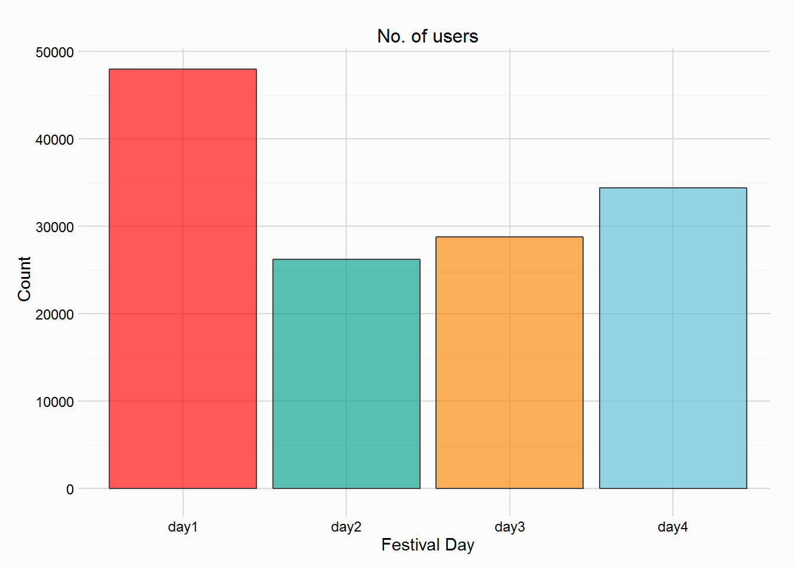
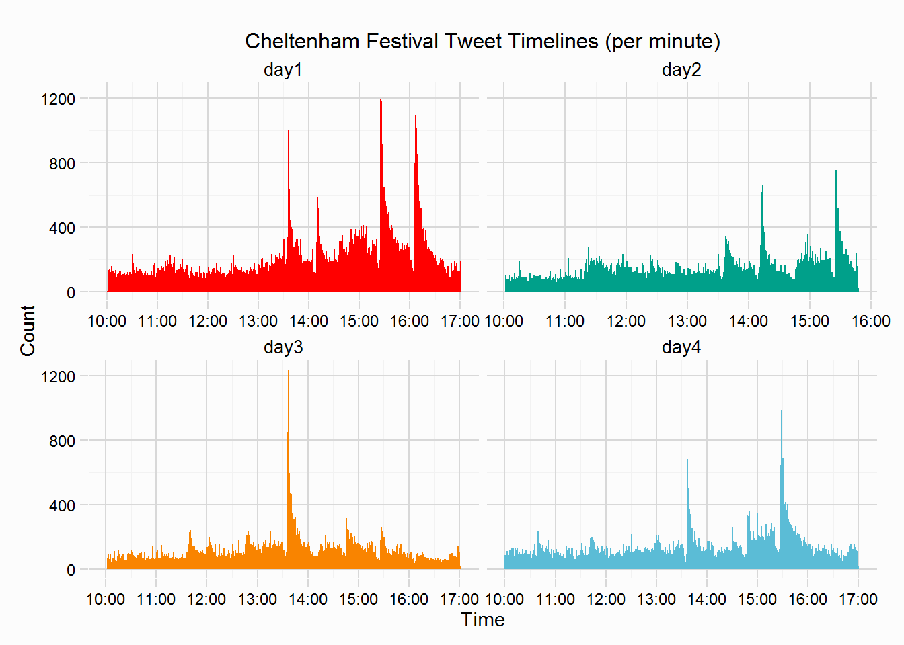
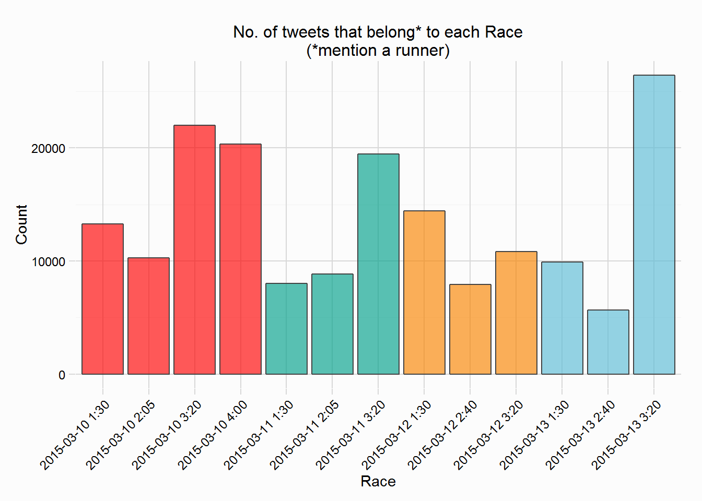
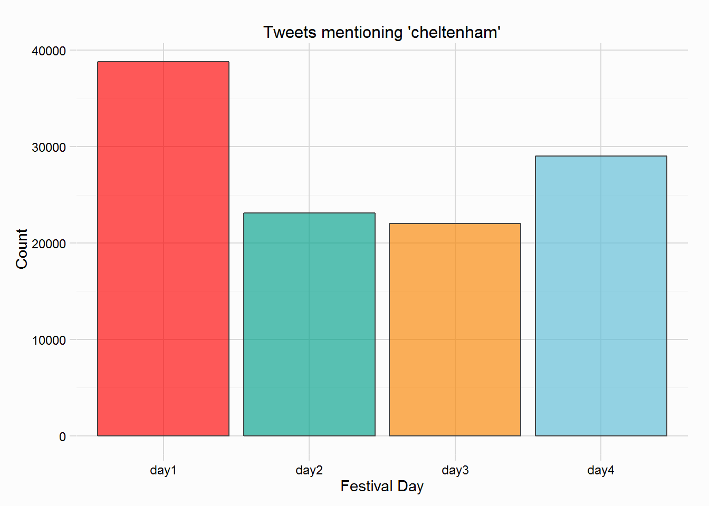
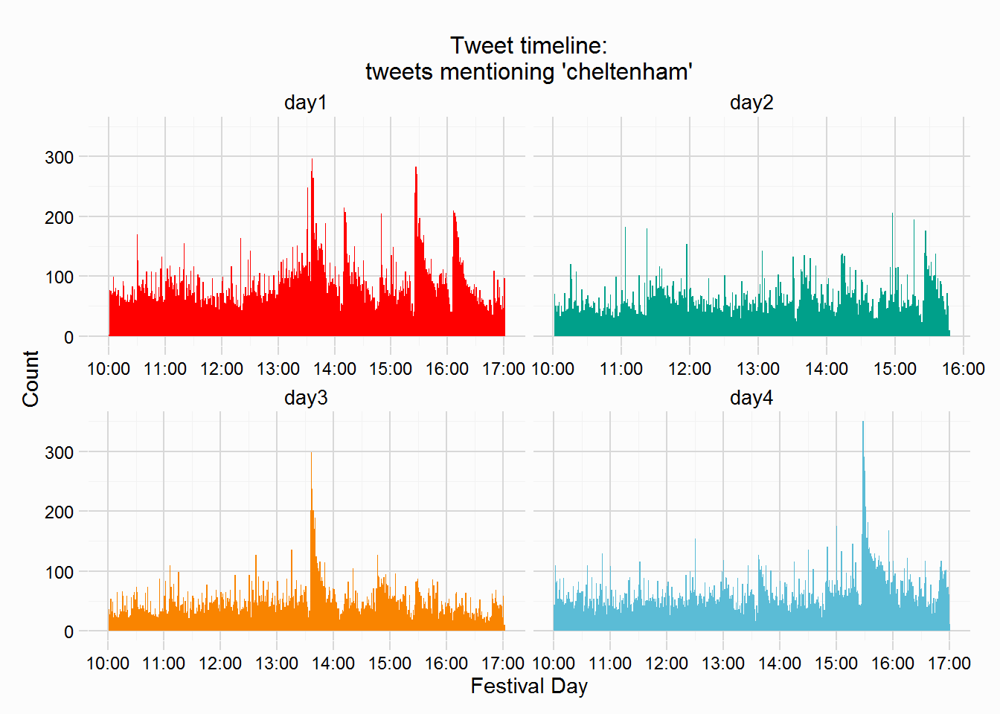
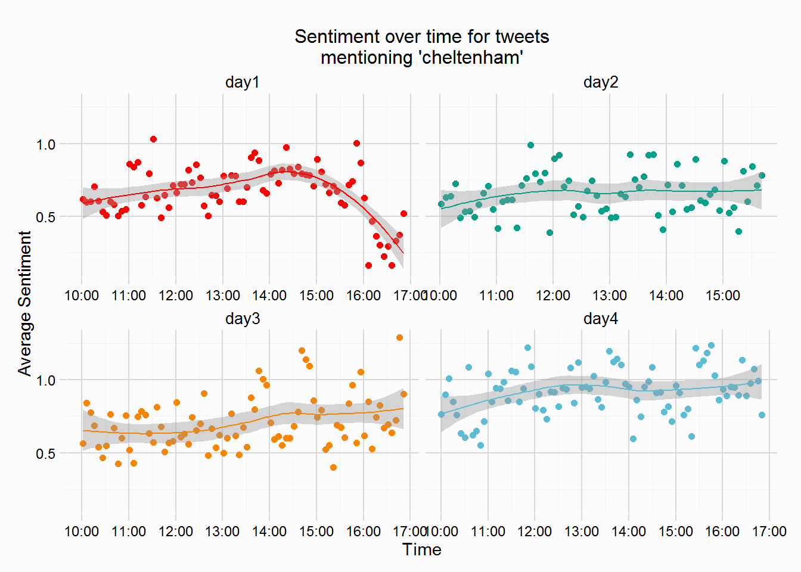

Over the four Festival days, tweets were collected from 10am until 5pm (with the exception of Wednesday, day two, which was cut short), resulting in the collection of 267722 tweets. For details about how the tweets were collected see here, for cleaning tweets see here, and for ‘classifying’ tweets that “belong” to the Festival see here.
Below are summary plots showing the number of tweets sent on each Festival day and the number of unique twitter users. Day One saw the most tweets sent, and unsurprisingly it also had the most users. Day 2 (Wednesday) had the fewest users, but despite collection of tweets ending prematurely, it had more tweets than Day 3. Before counts increase on Day 4, the profile of fans engaging at the start and end of the Festival is the same as seen last year. Part of this could be down to the number of horses being ‘tracked’ on twitter, Days 1 and 4 tracked more than the middle days (Day 2 only tracking 38 different horses, see the table here for a full list and counts of horses collected).


Next is a look at the engagement of twitter users over time. Below are tweet timelines across the four days, showing the number of tweets sent per minute. For reference, the Championship races, from which the horses were ‘tracked’ on twitter, started at: Day 1 (13:30, 14:05, 15:20, 4:00); Day 2 (13:30, 14:05, 15:20); Day 3 (13:30, 14:40, 15:20); Day 4 (13:30, 14:40, 15:20).
The large peaks typically come after a race has been completed. The largest peak came after the opening race on Day 3 (start time 13:30), the JLT Novices Chase which was won by Vautour in impressive fashion, his win prompted over 1200 tweets being sent for a single minute shortly after the race was completed. Day 1 provides the most post race reactions, with the Champion Hurdle (start time 15:20) coming close to the reaction of Vautour, with just shy of 1200 tweets sent for a single minute. The reaction to the final race on Day 1 (start time 16:00) is also unsurprising if anyone watched that race. Each individual day will have it’s own summary analysis (eventually), for those curious.

We can also look at the number of tweets that “belong” to each Championship race; when I say belong, I mean that a tweet mentions a runner from that race. The plot below shows these counts. The Cheltenham Gold Cup (Day 4, 2015-03-13 3:20), the final Grade 1 race of the Festival had the most tweets, with over 25,000, the second most tweeted about race was the Champion Hurdle (Day 1, 2015-03-10 3:20), closely followed by the Mares Hurdle (Day 4, 2015-03-10 4:00). The Gold Cup and Champion Hurdle were 2 of the most tweeted about races from last year too, see here.

“Cheltenham” was one of the words tracked that wasn’t a horse running at the Festival, and was mentioned in 112977 tweets. The number of cheltenham mentions across the four days is plotted to the right, Day 1 featured the most tweets.
Below is a plot showing the timelines of “cheltenham” mentions. A bit like last year, on Day 1, as the opening race of the Festival draws nearer there is a small increase in the number of “cheltenham” tweets. It also looks like impressive winners of Festival races, prompt users to mention “cheltenham”, Vautour on Day 3 for example. The most mentions of “cheltenham” unsurprisingly coincided with the Cheltenham Gold Cup, run on Day 4 at 15:20.


We can also assess the sentiment of tweets mentioning “cheltenham” over time, seen in the plots below. The average sentiment over 5minute intervals is plotted in the points, with a loess regression producing the smooth curve. Interesting that sentiment over 3 of the days, Days 2, 3 and 4, remains quite positive throughout, with Day 4 the most positive of the four days. However on Day 1, the sentiment of the twitter crowd, crashed around 16:00, anyone following the days action will no doubt be aware of the fall of Annie Power in the Mares Hurdle.

{kind=link}